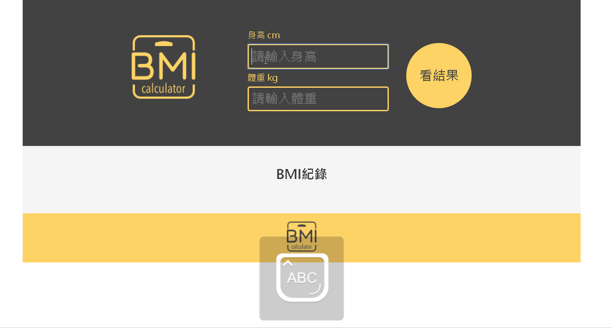

- 前端工程：
- JavaScript 基本語法、ES6
- AJAX & XMLHttpRequest 非同步來源請求
- API 串接 (Google Maps, FB Login)
- 使用 Git GUI (Source Tree) 做版本控制
- Web Layout：
- 使用 HTML5、CSS3 開發靜態頁面
- jQuery 互動效果
- RWD 響應式網頁設計
- Bootstrap 快速架構網頁框架
-
國立政治大學
(2012 年 - 2016 年)
- 主修：經濟學系
- 交換經驗：中國武漢大學
- TOEIC：850
-
臺灣證券交易所股份有限公司 活動企劃執行
(2017 年 5 月 - 至今)
- 籌辦公司協辦組織 中華民國證券期貨分析協會 投資專題講座、上市櫃公司參訪、年度會員大會
- 代表 中華民國證券期貨分析協會 出席 於越南河內舉辦 2018年度亞洲投資分析師年會 (ASIF) 與論壇
- 與國際組織 ACIIA (國際投資分析師協會) 以及 ASIF (亞洲證券暨投資聯合會)協作、定期參與會議及舉辦論壇
-
人力飛行劇團 九歌兒童劇團 演出企劃執行
(2016 年 9 月 - 2017 年 3 月)
- 票務處理（兩廳院售票系統）、行銷決策討論與行政事務。演出期間負責前台票務、售物以及後台機動人員
- 擔任劇團製作組、韓國導演帶領的表導組以及專業技術組間溝通橋樑，管理年度大戲演員、道具 全台巡演
- 年度大戲期間為主要演出執行人，帶領演員至各場館演出、與專業人員溝通技術點，支援劇團製作與行政組
-
電商 EZTABLE 簡單桌 營運組跨行銷組 實習生
(2016 年 4 月 - 2016 年 6 月)
- 分類及分析客人評論等第一手資料，將問題回報至負責組別進行後續處理，每周發表並分析客人評論簡報
- 營運公司粉絲專頁、撰寫宣傳文案、線上活動行銷發想及執行。發想、執行並簡報CEO 特別指派實習生專案
- 臺灣證券交易所股份有限公司 活動企劃執行
- (2017 年 5 月 - 至今)
- 籌辦公司協辦組織 中華民國證券期貨分析協會 投資專題講座、上市櫃公司參訪
- 、年度會員大會
- 代表 中華民國證券期貨分析協會 出席 於越南河內舉辦 2018年度亞洲投資分析
- 師年會(ASIF) 與論壇
- 與國際組織 ACIIA (國際投資分析師協會) 以及 ASIF (亞洲證券暨投資聯合會)
- 協作、定期參與會議及舉辦論壇
- 人力飛行劇團 九歌兒童劇團 演出企劃執行
- (2016 年 9 月 - 2017 年 3 月)
- 票務處理（兩廳院售票系統）、行銷決策討論與行政事務。演出期間負責前台
- 票務、售物以及後台機動人員
- 擔任劇團製作組、韓國導演帶領的表導組以及專業技術組間溝通橋樑，管理年
- 度大戲演員、道具 全台巡演
- 年度大戲期間為主要演出執行人，帶領演員至各場館演出、與專業人員溝通技
- 術點，支援劇團製作與行政組
- 電商 EZTABLE 簡單桌 營運組跨行銷組 實習生
- (2016 年 4 月 - 2016 年 6 月)
- 分類及分析客人評論等第一手資料，將問題回報至負責組別進行後續處理，每
- 周發表並分析客人評論簡報
- 營運公司粉絲專頁、撰寫宣傳文案、線上活動行銷發想及執行。發想、執行並
- 簡報CEO 特別指派實習生專案